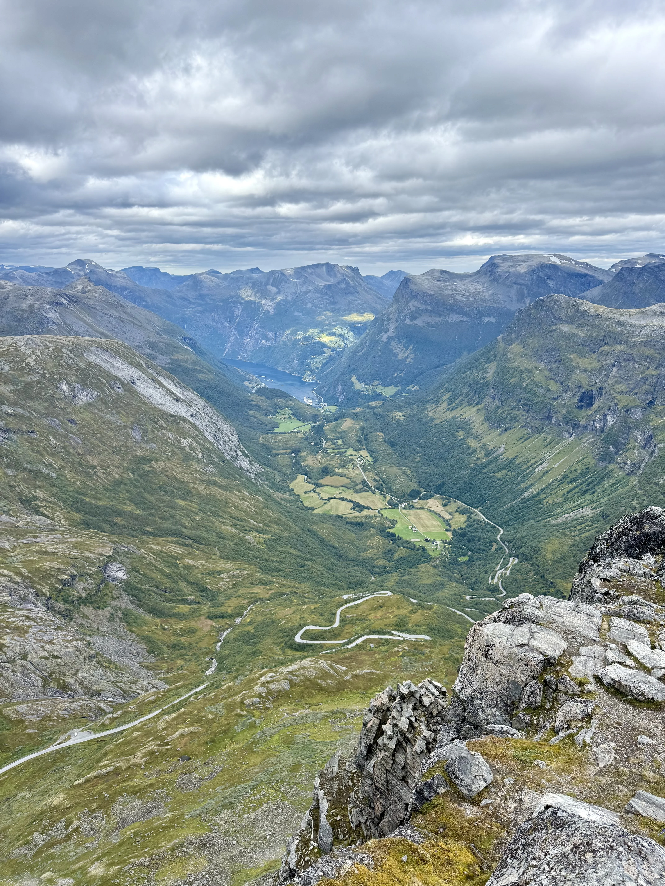
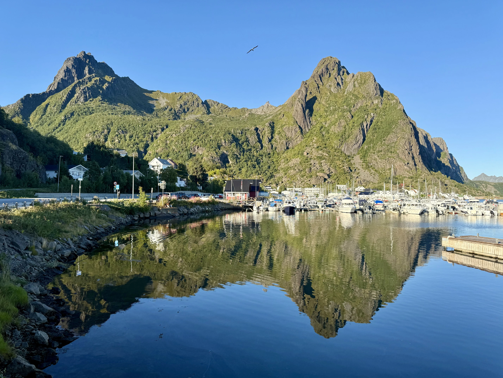
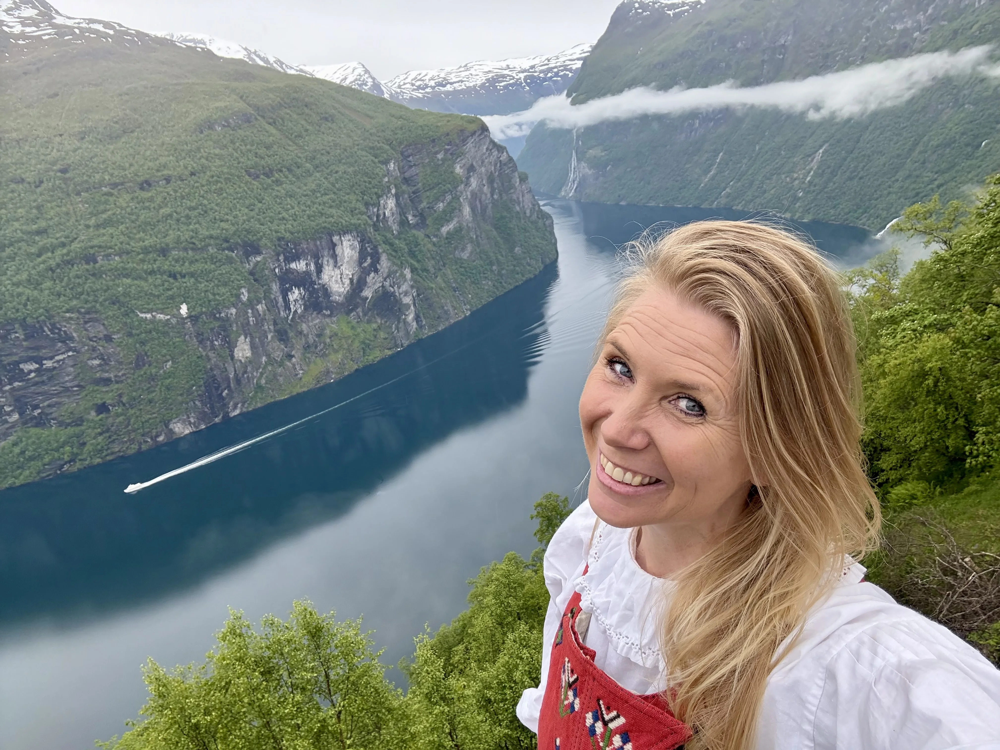
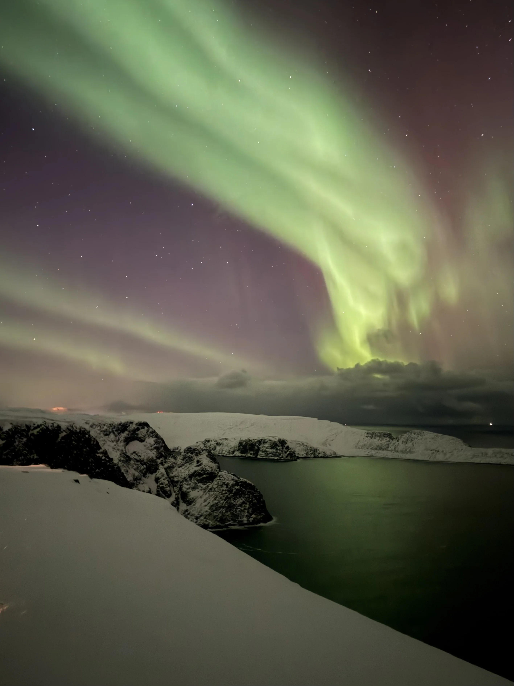

Welcome
My name is Margot Björck and I am delighted to be your Travel Director on Spectacular Scandinavia and Its Fjords with Insight Vacations. I am here to help answer questions, support you along the way and make sure the journey begins clearly and comfortably.
You have chosen a beautiful itinerary. We will travel through places with wonderful scenery, layered history, interesting people, good food and plenty of moments to remember together.
I will be meeting you in Copenhagen. This page is here to give you a little more context before we meet, and to make those final pre-tour days feel easier, calmer and more personal.
Your official Insight Vacations documents and welcome email remain the main source for timings, hotel details and operational updates. Think of this page as my extra welcome, plus the practical reminders I know people usually appreciate.
Know where to be
Your welcome email confirms our Copenhagen hotel and Day 1 timings. Aim to be in the hotel lobby or reception area for the first group meet-up listed there.
First group meeting
Please be in the hotel lobby or reception area at the meeting time listed in your welcome email, ready for the tour start.
Before then is usually arrival and settle-in time: check in, store bags if you arrive early, freshen up and have a relaxed look around nearby if you like.
Hotel check-in
Check-in is typically after 3:00 PM. If you arrive on a morning flight, your room may not be ready straight away, and that is completely normal.
Reception can usually store your main luggage until your room is ready, so it helps to keep essentials in a small day bag.
Airport transfers and arrivals
If transfers are included for your departure, check your official documents and welcome email for timings and meeting details.
If you have booked a private transfer, those details are listed separately. If you are making your own way, official airport taxis are easy to find.
Arrival note
Keep your hotel address, booking details and a charged phone easy to access in case plans change on travel day.
If your arrival timing changes significantly, use the support contacts in your official documents as soon as possible.
Arrival & planning
This tour starts in Copenhagen and finishes in Oslo. A quick check of your joining details before you travel usually makes Day 1 feel much easier.
Check your joining details
Your welcome email and official documents confirm your Copenhagen hotel, Day 1 meeting time and arrival details. Keep those details easy to access in case you need them.
Arrival plan
- Check your latest airline updates.
- Confirm how you are getting from the airport to the hotel: Insight Vacations transfer, private transfer or taxi.
- If you booked a private transfer and your arrival time changes, update your transfer provider.
- If your transfer was booked through Insight Vacations, contact European Guest Services using the details in your welcome email.
- Complimentary transfers run at set times and cannot be held. If you miss yours, please do not panic. Official taxis from Copenhagen Airport are easy to find.
Keep essentials accessible
Passport, cards, phone, chargers, medication and key documents should stay accessible rather than buried in your main suitcase.
A little of the route's atmosphere
Spectacular Scandinavia and Its Fjords is full of water, mountain roads, colourful harbour towns and wide-open northern views. These images give a little taste of the feeling.




On the coach
The coach will be our moving base between cities, fjords and mountain areas. A few simple habits help keep things comfortable, safe and pleasant for everyone travelling together.
Seat rotation
Seat rotation happens regularly. I will explain the system clearly once we are underway.
Day bag
Bring what you may need during the day: medication, glasses, charger, water, layers and anything valuable.
Main suitcases
Main suitcases stay underneath and are not always accessible again until hotel arrival on travel days.
Carry-on space
Smaller soft bags work best overhead or under the seat. Wheel-based carry-on suitcases usually do not fit well in coach racks.
Seatbelts
For your safety, please keep your seatbelt fastened whenever you are seated and while the coach is moving.
Comfort stops
Comfort stops are planned, but it still helps to think ahead for water, tissues and any medication.
Timings
Travel days run better when everyone is on time, especially with booked visits, ferries and fixed departure windows.
Your Driver
Your Driver plays a key role in both safety and timing, and legal driving-hour rules shape how each day is paced.
Ferries and scenic roads
Some days include ferries, scenic stops or mountain roads, so keep a layer and key essentials in your day bag.
Snacks
Snacks are absolutely fine. For comfort and safety on a moving vehicle, it is best to avoid hot food and hot drinks on the coach.
What to pack
Most travellers find they pack more than they actually use. Comfortable, practical and easy to manage usually wins every time on this tour.
Essentials
- Comfortable walking shoes you already trust
- Layered clothing for changing conditions
- A lightweight waterproof or weatherproof jacket
- A small day bag for travel days and sightseeing
- A universal travel adapter for Denmark, Sweden and Norway
- Optional wired headphones with a 3.5mm jack for audio devices on some sightseeing days
Packing smarter
- Think practical rather than just in case, and leave a little room for things you pick up along the way.
- Layers are key. Coastal areas, fjords, mountains and cities can feel very different in the same day.
- Keep anything important for the day in your smaller bag, not the main case.
- A reusable drink bottle can be helpful, but slim or collapsible styles are easiest to carry on coach days.
What to expect from the weather
Scandinavian weather can shift quickly, especially near fjords, coastlines and mountain areas. Forecasts are useful, but flexibility helps most.
A practical reality
You may get cool mornings, mild afternoons, wind, light rain and sunshine all within a short stretch. That is fairly normal on this route.
What usually helps
Flexible layers usually serve you better than worrying too much about the perfect forecast. A light waterproof layer is worth having even when the day looks clear.
Comfort beats style
This is a sightseeing-heavy itinerary with uneven surfaces, steps, outdoor stops and scenic viewpoints. Good shoes matter more than anything clever in your suitcase.
Fjords and mountains
Scenic areas can feel cooler and breezier than city centres. Keep a layer in your day bag rather than packed underneath the coach.
Staying connected on tour
For written communication on tour, practical updates and sharing facts, pictures and moments, WhatsApp is often the easiest option. Joining is optional, and it works alongside your official documents and welcome email.
-
1Download WhatsApp before you travel if you do not already use it.
-
2Set up your profile and verify your number.
-
3Save my number in your phone from the welcome email or from the contact card on this page.
-
4Send me a quick WhatsApp message with your name so I know you are set up before the tour begins.
Practical notes
A few practical notes tend to come up on this itinerary, so they are worth a quick read before you travel.
The pace of the tour
This is a 15 day journey through Denmark, Sweden and Norway. There is good variety and some relaxed starts, but also travel days, ferries, mountain roads and longer scenic stretches.
Walking
Expect city walking, uneven surfaces, steps, viewpoints and days where comfortable shoes matter more than style points.
Hotel styles vary
Across Scandinavia we use a mix of modern city hotels and regional properties. Room sizes, layouts and facilities can vary from place to place.
Air conditioning and heating
Scandinavian buildings are generally designed for cooler climates. Some rooms may feel warmer or cooler than expected depending on the property and local weather. If something is uncomfortable, ask reception early so they can help where possible.
Included meals
Breakfast is included daily and some dinners are provided. On included meal days, timings are set to keep the itinerary running smoothly, so punctuality is appreciated.
Travelling as a group
Touring as a group works best when everyone is mindful of shared timings. I will make sure things run smoothly from my end.
Money and payments
Cards are widely accepted across Scandinavia and are usually the easiest way to pay. It can still help to carry a small amount of local cash for toilets, quick snacks or small purchases.
Currency
Denmark uses Danish Krone (DKK), Sweden uses Swedish Krona (SEK), and Norway uses Norwegian Krone (NOK).
Toilets
Some public facilities may require coins or a small payment, so keeping a little local cash handy can occasionally help.
Security
Keep passports, cards and valuables secure. Busy stations, city centres and major sights are the places to stay sensible with your belongings.
Gratuities
Porterage plus tips and gratuities at hotels and restaurants are included in your tour price. Tips for your Travel Director and Driver are separate unless pre-paid.
If you have pre-paid, thank you, it is genuinely appreciated. If you are unsure, check your voucher or booking confirmation.
Optional experiences
Your tour already includes a lot, but optional experiences are worth knowing about. They go a little deeper in certain places and everything is organised for you.
I will walk you through what is available once we are underway. There is never any pressure.
Important contact details
Save these now rather than trying to find them again once your travel is already underway.
Margot Björck
@margot_traveldirector_ttc
Save Margot to your contacts
Travel with Margot
Questions before the tour?
Before the tour begins, I may not always be able to reply immediately, but messages will be checked as time allows.
Once the tour is underway, I will always do my best to keep everyone informed and make things feel clear and manageable.
For anything that needs immediate attention before Day One, please contact European Guest Services using the details below.
+44 207 620 8900
Looking very much forward to seeing you in Copenhagen.
Final note
During the tour, if you are ever unsure about anything, just ask. I am there every step of the way to help the journey feel comfortable, informed and easy to settle into.